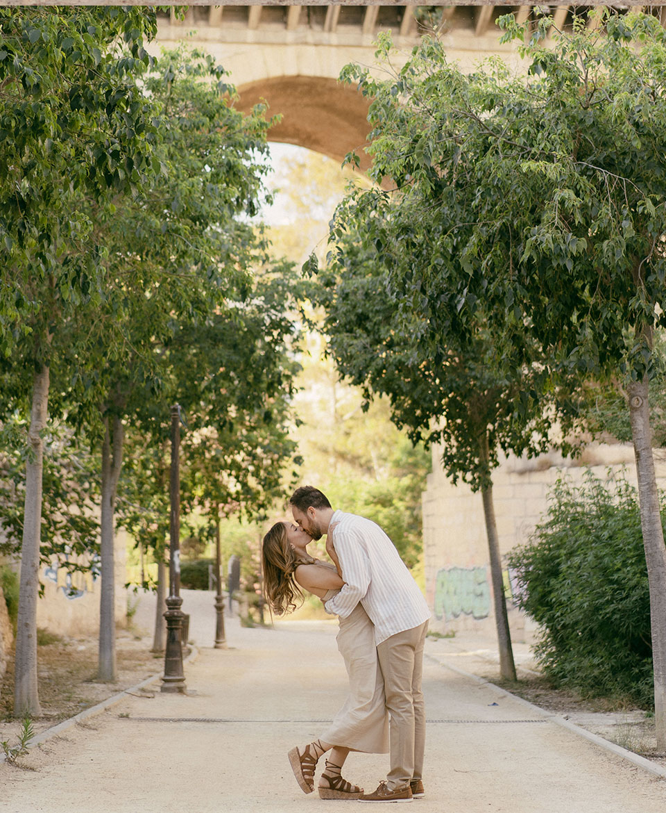

Detalles
Querida familia y amigos, ya podéis preparar vuestros trajes de boda porque os esperamos el próximo 9 de septiembre a las 12:30h en la FINCA TORRE DE REIXES (Sant Joan)
¡IMPORTANTE! La recogida del bus será aproximadamente a las 11:45h en el centro de Benidorm y a las 12:00h en la Barbera de la Vila Joiosa. La vuelta en bus será cuando terminemos en la finca, sobre las 00:00h. Aunque los horarios y lugares exactos se confirmarán más adelante.
¡Contamos con vosotros!
